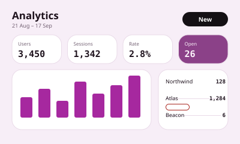
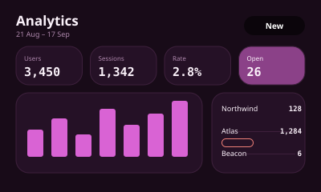
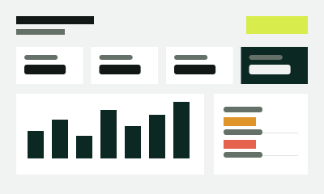
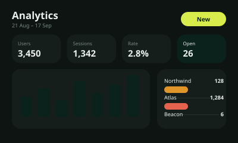
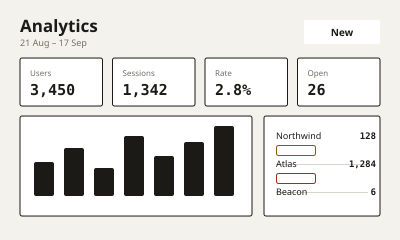
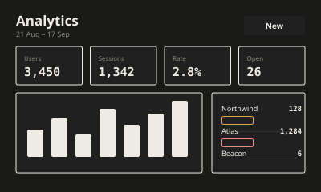
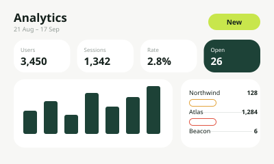
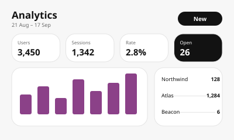
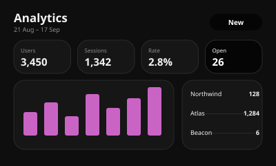

Filament 1.0
- For
- deployment and infrastructure consoles, developer tooling, service status and monitoring screens
- Not
- print output, long-form reading
One markdown file per system. Drop it into a project and AI-assisted development follows it.







light only

Nothing matches those filters.